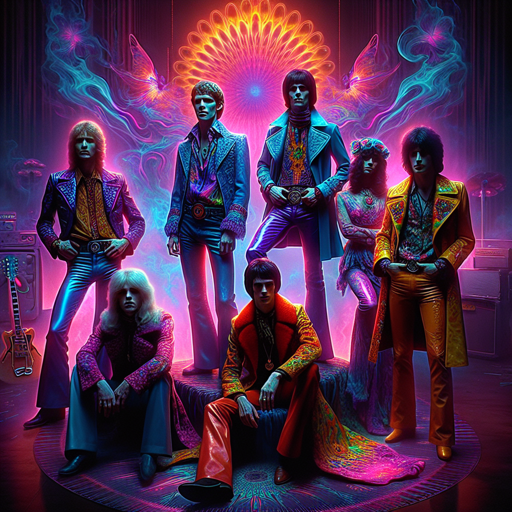

Backstory
In the electric haze of the 1980s, amidst the Thatcherite gloom of Britain, emerged a band that shimmered like a mirage—Velvet Echoes. Born from the minds of four sonic alchemists, they took the stage with a style they dubbed Neon Reverie, a heady concoction of Psychedelic Rock and Synthwave. Frontman and lyrical architect, Adrian "Flash" Turner, was a poet in leather boots, his voice a raspy conduit for tales of utopian dreams. His weapon of choice, a vintage Rickenbacker 330, produced jangles that danced like stardust. On keys, the enigmatic Elara Moon, a synth sorceress with a penchant for the ethereal, crafted soundscapes that were both haunting and hopeful. Her fingers caressed a Roland Jupiter-8, coaxing it to sing in colors unseen and emotions unfelt. Bassist Robbie “Vortex” Jones, with his mane of curls and perpetual sunglasses, laid down grooves that were both thunderous and transcendent. His Fender Precision Bass was a well-worn totem, vibrating with the pulse of cosmic funk. Finally, there was Max “Echo” Wallace on drums, a rhythmic shaman who summoned beats from the ether. His Ludwig Vistalite kit was a kaleidoscope of sound, each strike a ripple in the tapestry of time. Together, Velvet Echoes were more than a band; they were a movement, a swirling vortex of sound and vision, channeling the zeitgeist of a generation lost in the neon glow.
Band Members

Discography
**Album Title 1: "Neon Dreams and Electric Visions"**
1. **Stardust Reverie**
- 2. **Chromatic Heartbeat**
- 3. **Echoes of Tomorrow**
- 4. **Utopian Mirage**
- 5. **Aurora's Lament**
- 6. **Velvet Nightscapes**
- 7. **Sonic Alchemy**
- 8. **Infinite Skyline**
- 9. **Cosmic Funkadelia**
- 10. **Elysium's Pulse**
- 11. **Electric Whisper**
- 12. **Spectral Odyssey**
- 13. **Dancing in the Nebula**
- 14. **Celestial Silhouettes**
- 15. **Beyond the Neon Horizon**
---
**Album Title 2: "Synths and Shadows"**
1. **Moonlit Paradox**
- 2. **Rhythmic Illusions**
- 3. **Opalescent Dreamscape**
- 4. **Tales from the Velvet Abyss**
- 5. **Prismatic Echoes**
- 6. **Kaleidoscopic Journey**
- 7. **Pulse of the Ether**
- 8. **Galactic Reverberation**
- 9. **Mirrors of the Mind**
- 10. **Echoing Eternity**
- 11. **Sonic Reverberation**
- 12. **Holographic Memories**
- 13. **Twilight Synthwave**
- 14. **Psychedelic Frontiers**
- 15. **Lunar Solitude**
---
**Album Title 3: "The Electric Alchemist's Journey"**
1. **Rhapsody in Neon**
- 2. **Temporal Reflections**
- 3. **Electric Alchemy**
- 4. **Whispers from the Void**
- 5. **Astral Caravan**
- 6. **Reverie of the Ancients**
- 7. **Galactic Illumination**
- 8. **Velvet Transcendence**
- 9. **Echoes from the Edge**
- 10. **Synesthetic Voyage**
- 11. **Binary Dreams**
- 12. **Ethereal Currents**
- 13. **Neon Phantoms**
- 14. **Paradoxical Beat**
- 15. **The Alchemist's Awakening**